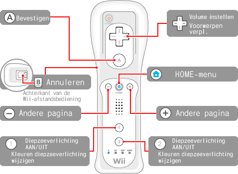

Selecteer iets en druk op de bevestigingsknop om verder te gaan. Druk op de annuleringsknop om een stap terug te gaan.

Andere pagina
Ga naar een andere pagina met de en.
* Je kunt tevens de knoppen op het scherm gebruiken.
Volume instellen
Het volume van de muziek en geluidseffecten in het spel aanpassen.
（Links: Volume verlagenRechts: Volume verhogen）
Kleuren diepzeeverlichting wijzigen
Druk opof als de diepzeeverlichting aan is om de kleur te wijzigen.
Klopactie
Als de cursor in het hoofdscherm of de weergavemodus op een vis staat, zwaai je de Wii-afstandsbediening om tegen het aquarium te kloppen. De vis reageert door je aan te kijken of weg te zwemmen.
* Soms reageren de vissen niet, of kunnen ze door bepaalde omstandigheden niet reageren.